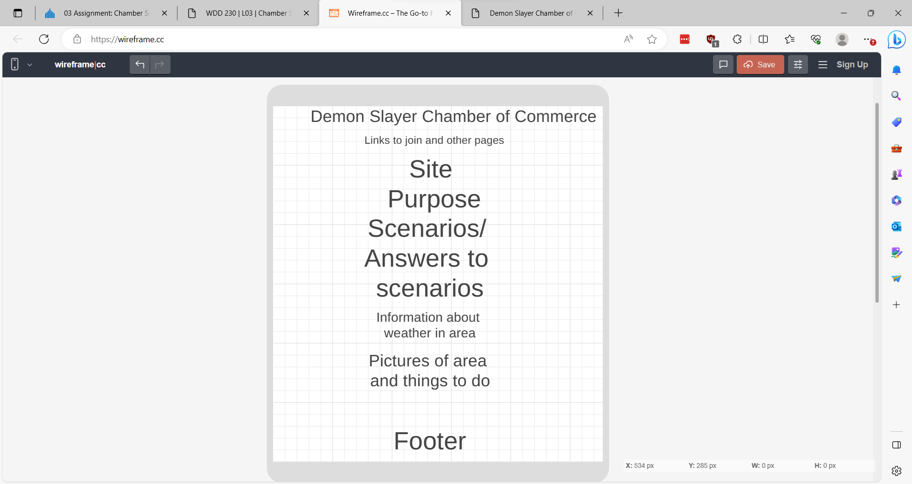
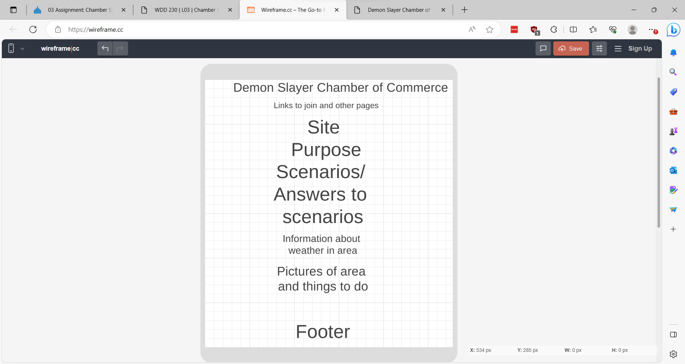

Wireframe
Mobile View
Large View

The Demon Slayer Chamber of Commerce acts as the main source of information on all corp and suspected demon whereabouts. It can also be used to contact Hashira or other corp members for assistance when needed.
What should I do if I encounter a member of the
twelve Kizuki?
Where can I go for medical care?
What are
the types of breathing styles and how can I learn them?
Body: 'Nanum Gothic', sans-serif; 'Roboto', sans-serif;
H1: 'Nanum Gothic', sans-serif; 'Red Rose', serif;
H2-5: 'Nanum Gothic', sans-serif;
Mobile View
Large View